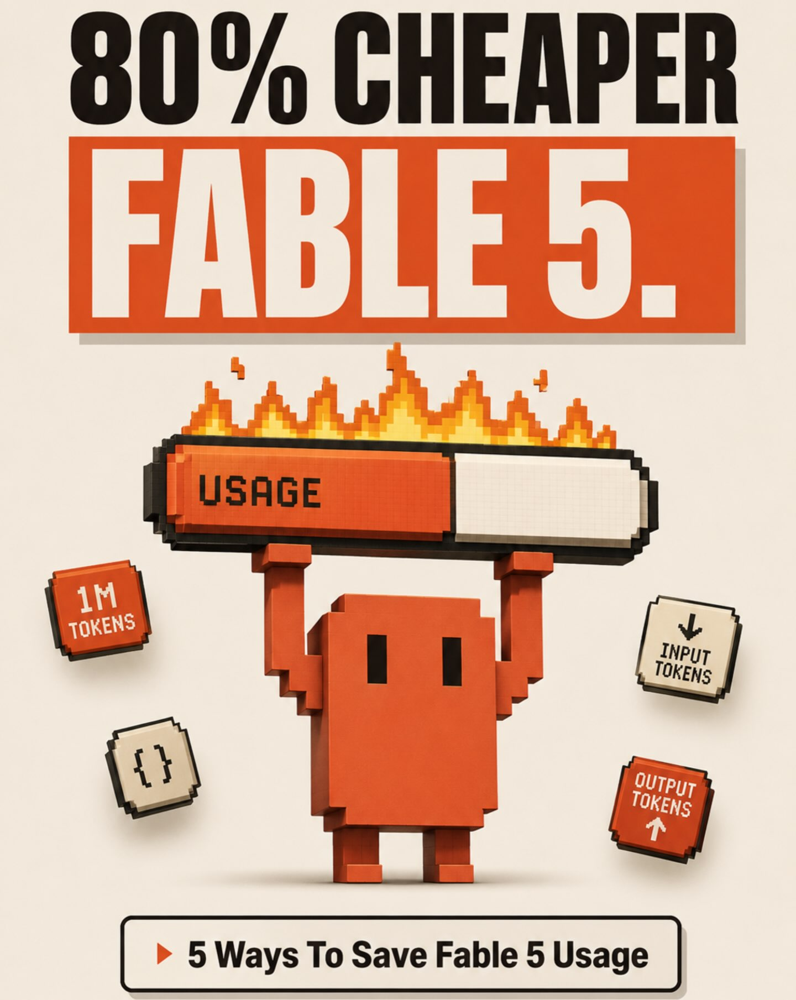
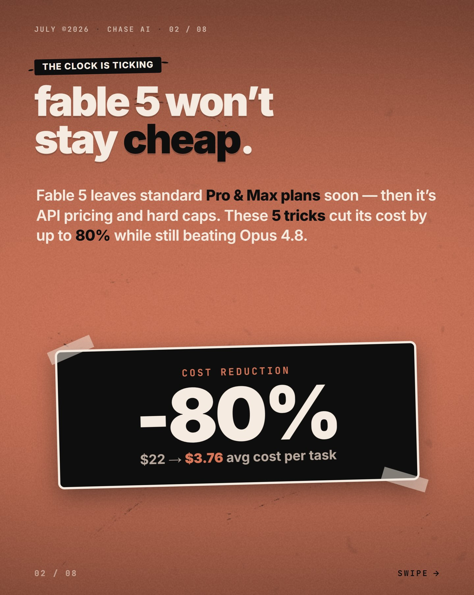
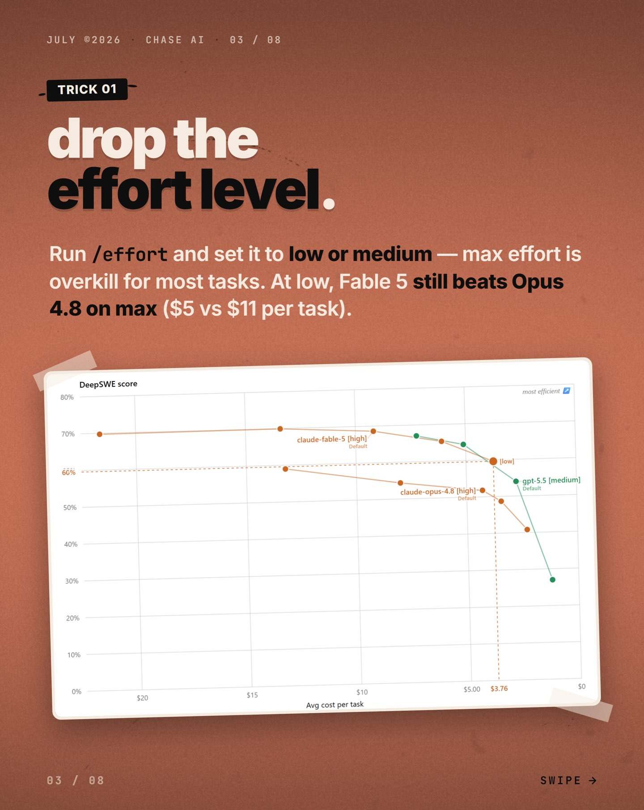
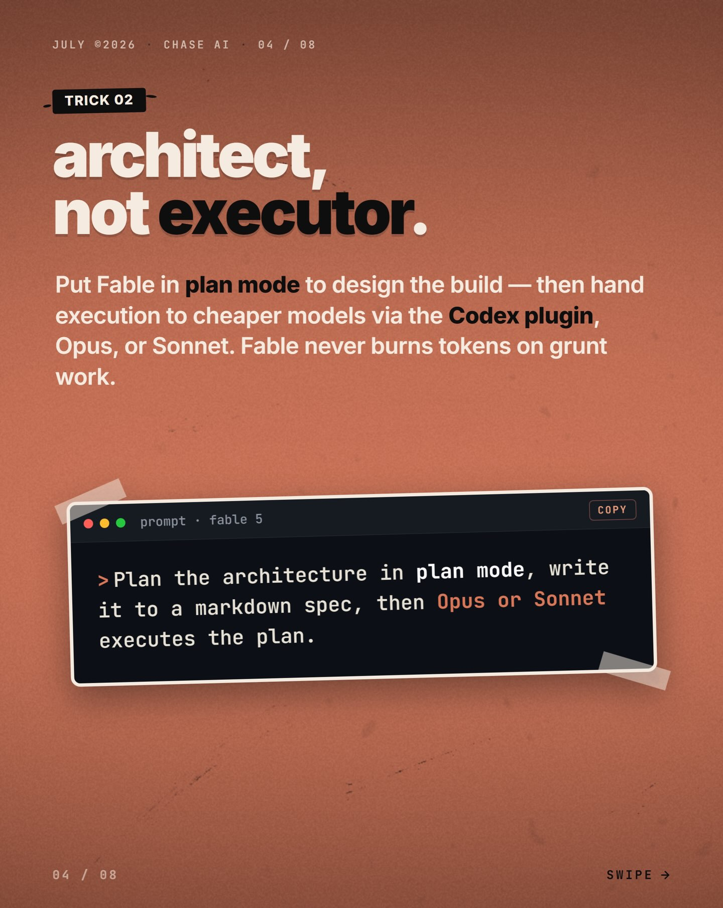
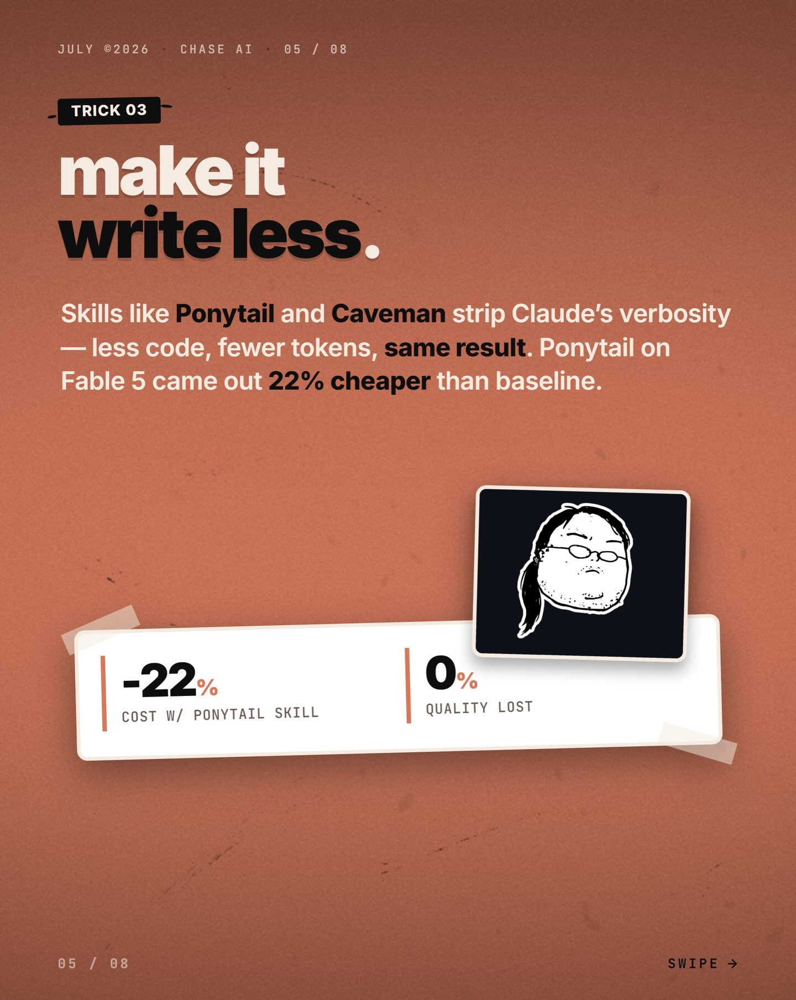
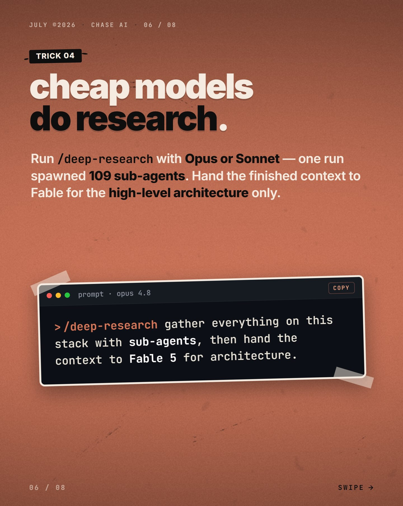
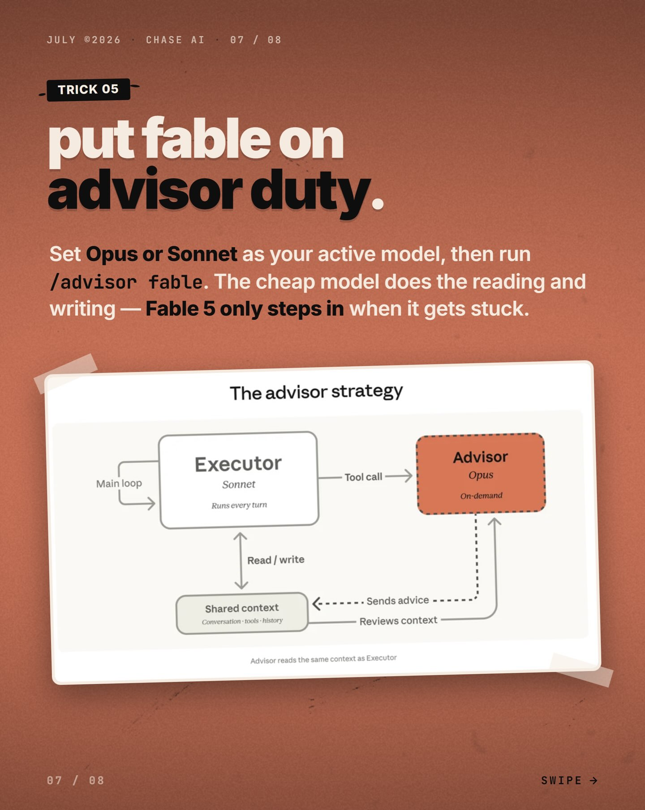

Instagram Post

Comment “agent” to get my Claude Code guides (for...
carousel (8 slides) (enriched by ClaudeClaw)
Summary
80% CHEAPER FABLE 5 | JULY @2026 CHASE AI 02 / 08 THE CLOCK IS TICKING fable 5 ... | JULY @2026 CHASE AI 83 / 08 TRICK 01 drop the effort level | JULY @2026 CHASE AI 04 / 08 TRICK 02 architect, not executor | JULY 2026 CHASE AI 05 / 08 TRICK 03 make it write less | JULY @2026 CHASE AI 06 / 08 TRICK 04 cheap models do rese... | JULY ©2026 CHASE AI 07 / 08 TRICK 05 put fable on advisor... | JULY ...
Caption
Comment “agent” to get my Claude Code guides (for free)
1
80% CHEAPER FABLE 5. USAGE 1M TOKENS {} INPUT TOKENS OUTPUT TOKENS 5 Ways To Save Fable 5 Usage
A pixelated orange character holds up a burning "USAGE" bar, surrounded by pixelated icons for "tokens" and curly braces, with text promoting "80% CHEAPER FABLE 5" and "5 Ways To Save Fable 5 Usage."
2
JULY @2026 CHASE AI 02 / 08 THE CLOCK IS TICKING fable 5 won't stay cheap. Fable 5 leaves standard Pro & Max plans soon — then it's API pricing and hard caps. These 5 tricks cut its cost by up to 80% while still beating Opus 4.8. COST REDUCTION -80% $22 → $3.76 avg cost per task 02 / 08 SWIPE →
A digital slide or infographic on a textured orange background presents information about "Fable 5" pricing and an 80% cost reduction, with navigation arrows and page indicators.
3
JULY @2026 CHASE AI 83 / 08 TRICK 01 drop the effort level. Run /effort and set it to low or medium — max effort is overkill for most tasks. At low, Fable 5 still beats Opus 4.8 on max ($5 vs $11 per task). DeepSWE score 80% 70% claude-fable-5 (high) Default 60% claude-opus-4.8 (high) Default (low
4
JULY @2026 CHASE AI 04 / 08 TRICK 02 architect, not executor. Put Fable in plan mode to design the build — then hand execution to cheaper models via the Codex plugin, Opus, or Sonnet. Fable never burns tokens on grunt work. prompt · fable 5 COPY > Plan the architecture in plan mode, write it to a markdown spec, then Opus or Sonnet executes the plan. 04 / 08 SWIPE →
A digital slide with a reddish-brown background presents information about AI, featuring a title, a descriptive paragraph, and a code-like block displaying a prompt.
5
JULY 2026 CHASE AI 05 / 08 TRICK 03 make it write less. Skills like Ponytail and Caveman strip Claude's verbosity — less code, fewer tokens, same result. Ponytail on Fable 5 came out 22% cheaper than baseline. -22% COST W/ PONYTAIL SKILL 0% QUALITY LOST 05 / 08 SWIPE →
A presentation slide with a reddish-brown background displays text about AI skills, a white rectangular box showing cost and quality metrics, and a small black framed illustration of a person's head.
6
JULY @2026 CHASE AI 06 / 08 TRICK 04 cheap models do research. Run /deep-research with Opus or Sonnet — one run spawned 109 sub-agents. Hand the finished context to Fable for the high-level architecture only. prompt · opus 4.8 COPY >/deep-research gather everything on this stack with sub-agents, then hand the context to Fable 5 for architecture. 06 / 08 SWIPE →
A digital slide with a reddish-brown background displays text about AI research models and a code snippet in a terminal window, framed by navigation arrows and page indicators.
7
JULY ©2026 CHASE AI 07 / 08 TRICK 05 put fable on advisor duty. Set Opus or Sonnet as your active model, then run /advisor fable. The cheap model does the reading and writing — Fable 5 only steps in when it gets stuck. The advisor strategy Main loop Executor Sonnet Runs every turn Tool call Advisor Opus On-demand Read / write Shared context Conversation + tool history Sends advice Reviews context Advisor reads the same context as Executor 07 / 08 SWIPE →
A slide from a presentation or infographic is displayed, featuring a title about "advisor duty" and a flowchart diagram illustrating an "advisor strategy" with interconnected boxes labeled "Executor," "Advisor," and "Shared context."
8
JULY 2026 CHASE AI 08 / 08 YOUR MOVE stretch every token. Full walkthrough on my YouTube — Claude Code deep dives every week. Link in profile. Save this · send it to a builder · follow @chase.ai. 08 / 08 SWIPE →
A digital slide with white text on a reddish-brown background, featuring a large headline and smaller informational text at the bottom, along with navigation elements.
All slides





